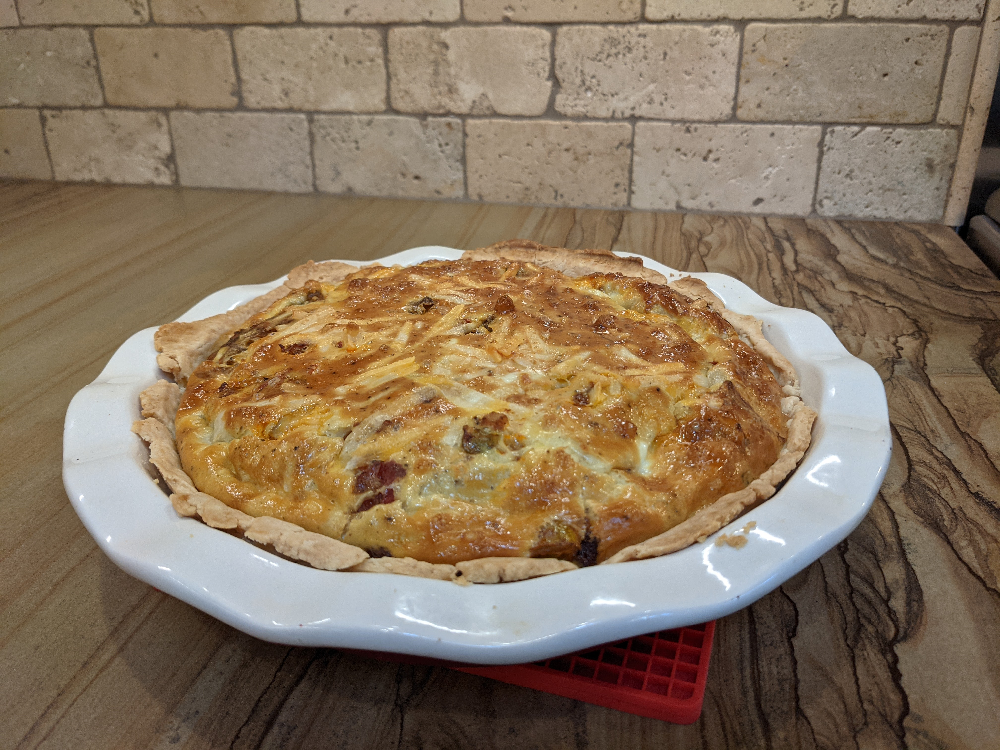

3.5 Quiche

Or as I like to think of it: Breakfast pie.
Source: Between Alton Brown’s classic quiche, a random quiche crust, and a pie crust from a pie dish.
Crust | Filling | Tools |
190g AP flour | 4-6 eggs | Bowl for mixing (x2?) |
tsp salt | 1 - 1 1/4 cup dairy-free milk | Mat/board for dough |
7-8 tbsp dairy-free butter | Salt/pepper to preference | (I like a large SilPat |
4-5 tbsp cold water | Toppings as desired (see variations) | Rolling pin |
1-2 tsp sugar (optional) | Parchment paper (optional) | |
Dough scraper / spatula |
Preparation:
Crust
Put a bit of water into the freezer (to help chill it, not to actually freeze it).
Start the oven preheating to 400°.
Combine flour and salt and then cut the butter into the flour. You can use your fingers to smash it, or one of those butter-cutter things.
Add the water and start mixing. At some point it will come together, but may still be a bit crumbly. That’s okay. You can add a bit more water or just dump it out and try to pack it a bit like snow.
Flatten out the dough with your hand. If there are any crumbly edges, I’d try to break bits off and fill in gaps. Also, I like to do this on a silicon mat.
Not needed, but I like to cover the dough with parchment paper, then use the rolling pin on that to roll out the dough. Again, the edges may get a bit broken. Use a dough scraper or spatula to cut off bits and fill in gaps. You may need to do this once or twice to get the dough evenly rolled and approximately the right size for your pie dish.
Carefully scrape the crust off the surface and transfer to the pie dish. It might break again. Just do some more surgery to fill in gaps or smooth over cracks.
I put the parchment paper back on, and put a second (smaller) pie dish on top to keep the dough weighted down and prevent it from expanding too much.
Bake for 15-20 minutes. After that, take the top pie dish out and check the crust.
You may want to bake it another 5-10 minutes if it still feels a little too-soft. I find this to be pretty flexible. The worst case is that the bottom of the final quiche has a less crispy crust, but that hasn’t stopped me from enjoying it.
Comment: The parchment paper helps keep the rolling pin clean, as well as the second pie dish.
Filling
As the crust is baking, prepare the filling.
- Cook any meats, sautee any veggies.
- Mix the eggs together, but not “vigorously”. Mainly just break the yolks and get it gently mixed with the white. If you whisk it too much, then it will rise more when baking and risk overflowing the crust.
- Add the dairy-free milk, as well as any salt and pepper, and again gently mix. I don’t really measure the salt and pepper here, I just do a few good shakes from each container.
- Set aside, hopefully as it sits any over-whisking will settle down.
Final preparation
- When the crust is done, reduce the oven to 350°. You don’t necessarily have to wait for it to cool down, but if you bake the quiche at 400° it might get a little extra-brown on top. Though that might not be a particularly bad thing. add “toppings” first. If there are veggies, I tend to put those on top of the meat. That probably doesn’t matter. I do keep the cheese (dairy-free) on top.
- Pour the egg/milk mixture over. Try pour it around evenly, not all in one spot. I think the milk will run through the ingredients easier than the egg, so it might get a little unbalanced if you just pour it all in the middle. But maybe I’m crazy.
- Hopefully the egg mixture will come up to 1/4 inch or so from the top of the crust. If it’s much higher, you may be in for an adventure.
- Put the quiche into the oven. I recommend putting the pie dish onto a baking sheet, just in case the filling rises and spills over the edge.
- Bake for 35-45 minutes. If you gently shake it, it shouldn’t jiggle, except maybe at the middle. You can use a fork to poke in the middle and make sure the egg is fully cooked.
- Alton Brown says it should jiggle a little bit in the middle, but he also says to let the quiche rest for 30 minutes after it’s done. That might let the inside finish up. However, as we all know, the correct way to eat something is straight out of the oven so that you scald the entire inside of your mouth.
- But seriously, give it a little time. At least 10-15 minutes.
Variations:
- The “toppings” to mix in can vary. I’ve enjoyed the following:
- Chorizo (1/2 pound); onions, green peppers, and green chile (all sauteed); dairy-free cheddar.
- Sausage, home fries / hash browns (already fried), peppers and onions (sauteed); dairy-free cheddar
Notes:
- Alton Brown’s recipie called for 2 eggs. I’m not sure why I use more, my pie dish may have been slightly larger.
- I’m not sold on the sugar in the crust. That came from the recipe on the pie dish. Maybe for a sweet pie it’s better, but for a savory pie I think it might be preferable to note have sugar.